Bonus exercise: push files to an external SFTP server
The LAN-to-LAN flow keeps everything local. This exercise points your runtime at a real external SFTP server instead, so you can test the pattern most POCs actually care about: getting files off the customer's network and out to a partner.
⏰ ~15 min · optionalCreate a second Organization and an External SFTP endpoint
To keep this exercise realistic, we'll model the external server as belonging to a different company. Go to Organizations, add a new org called Partner, then go into it and add an Endpoint. Give it a name (for example EXT SFTP) and leave it enabled.
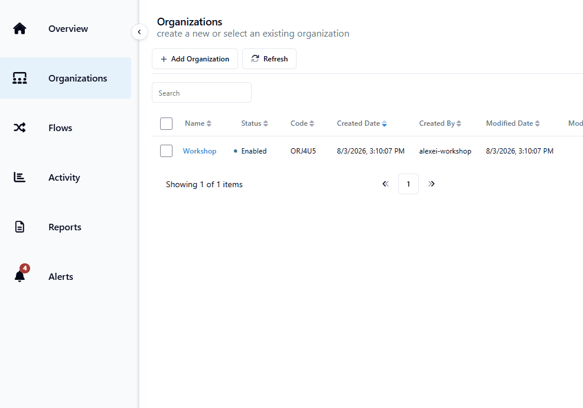
Set the type and connection details
Set Type to External SFTP, then fill in the connection details.
For this workshop, use the following values:
- Host:
us-ftpsbx-02.thruinc.net - Port:
22 - User:
mft-file-share-demo.boomi.com\nodeworkshop - Auth Type:
User Password - Password: will be provided live in the workshop
Once the credentials are set correctly, use Test Connection to validate before saving.
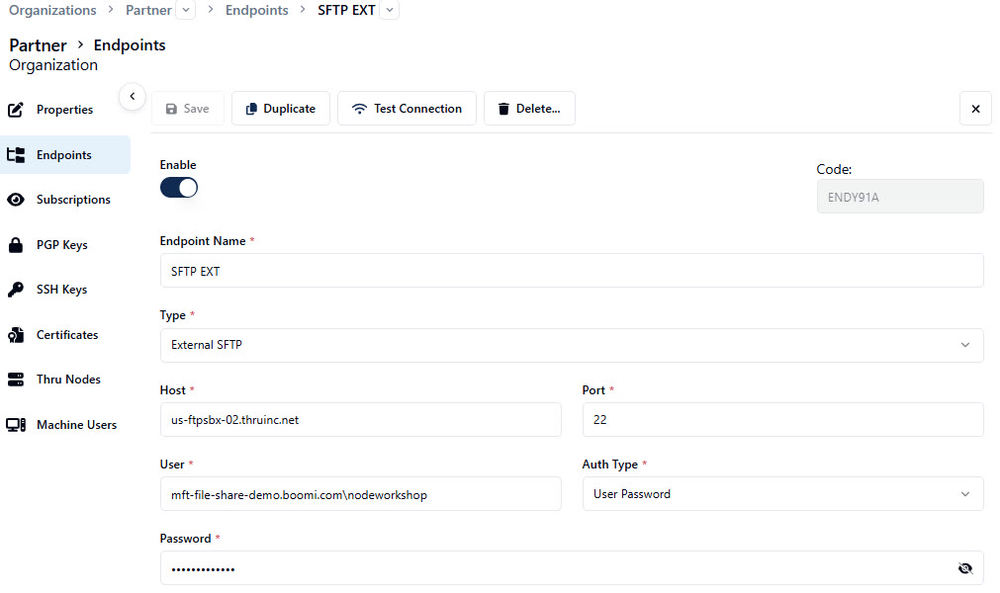
Create a new flow for this pattern
Create a second flow (for example LAN-to-EXT) separate from your LAN-to-LAN flow, so the two tests never collide.
Subscribe the two organizations, then add the runtime's File Share endpoint as the Source and your new org's External SFTP endpoint as the Target.
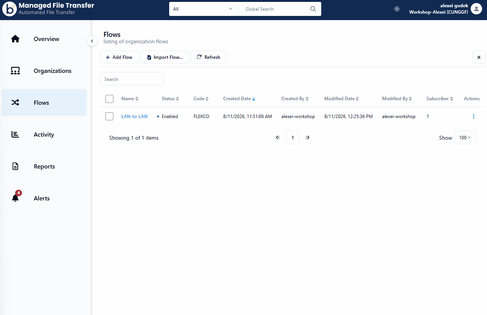
Use a dedicated source folder
To keep this test independent of your LAN-to-LAN flow, create a new subfolder (for example Partner) alongside your existing Source/Target folders, and point this flow's source at it instead of reusing the original Source folder.
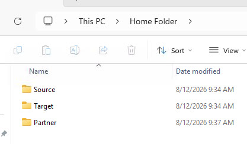
Update Source Flow Endpoint Path
Back in the flow, open the Source flow endpoint and scroll to the bottom to set the Endpoint Source Paths. In the Flow Endpoint Source Path field, set /Partner and click Save Changes.
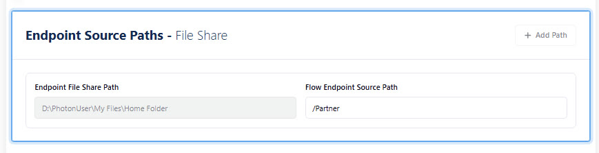
Set the remote target path
Open the Target flow endpoint's configuration and, under Endpoint Target Paths, enter the folder path on the remote SFTP server where files should land, which for this workshop will be /SHARED/NodeWorkshop.
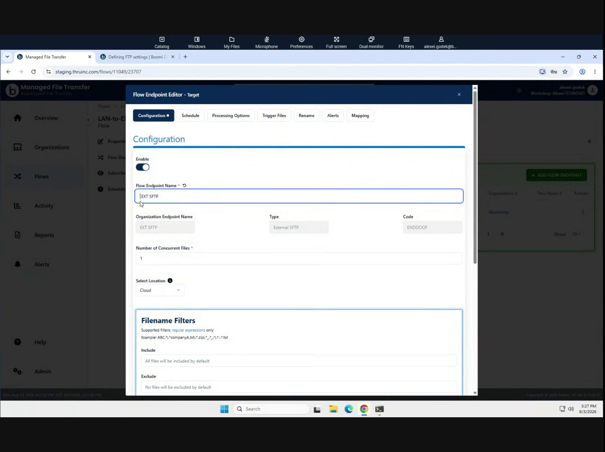
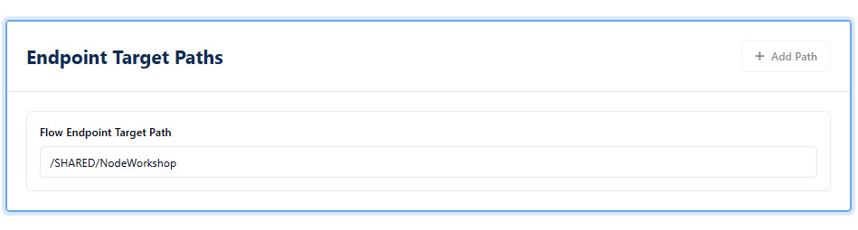
Also go to the Schedule tab and change the schedule to On Arrival, then click Save Changes.
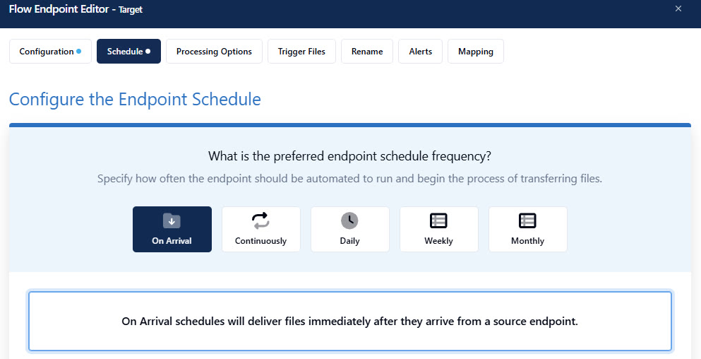
Create unique source file and then push changes so the flow is live
Back in Windows Explorer, in the Partner folder, create a new file named with your actual name and today's date (for example YourName_Date) — this keeps your test file unique on a shared external server.
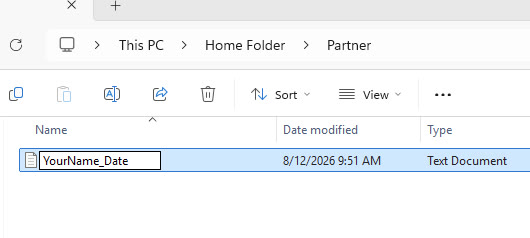
Then switch back to MFT and click View and Push Changes (Flow is unpublished) to make this flow live.
Trigger the source Flow Endpoint manually and view the result in Activity
Use Run Flow Endpoint Now on the Source flow endpoint, just like before.
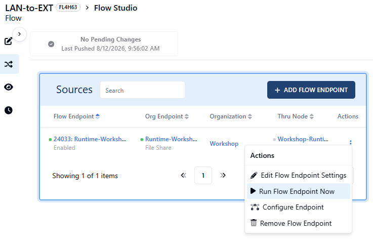
Then monitor the Activity dashboard to see the result.
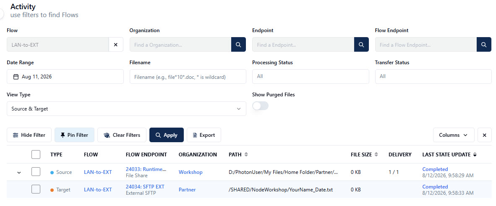
Final step — Transfer Status Details
Make sure you can see the Source and Target in the Activity dashboard. On the right-hand side, click on Completed to open the Transfer Status Details.
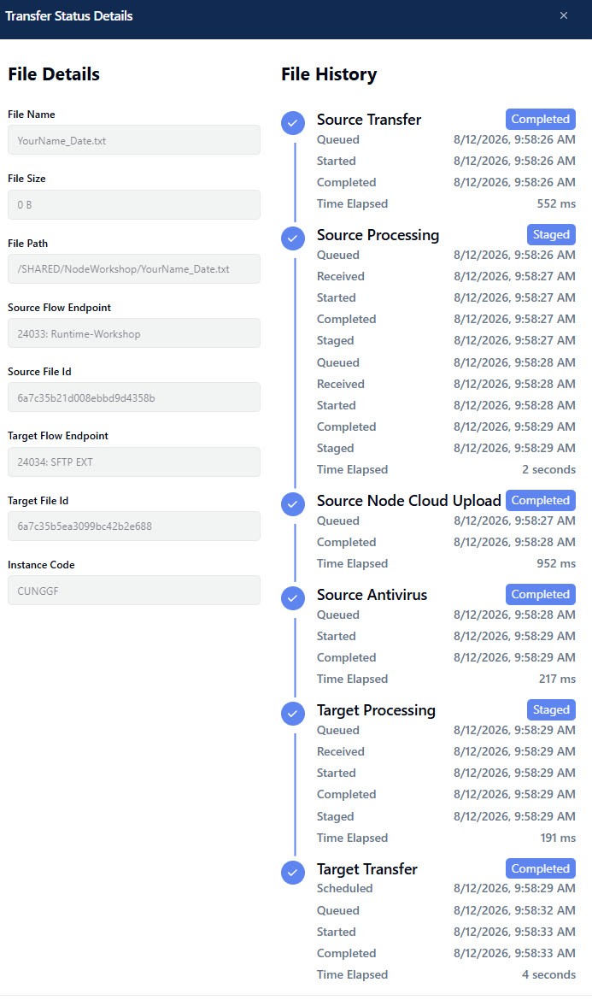